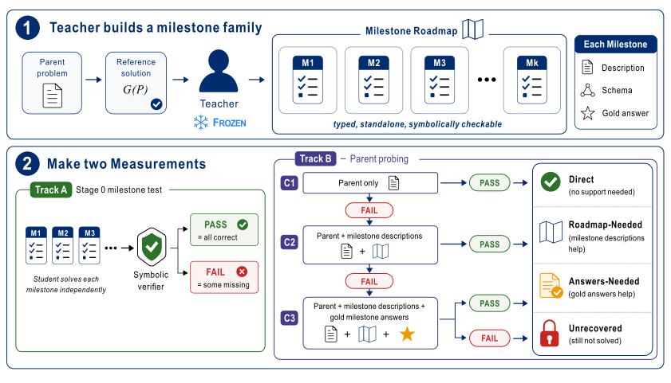
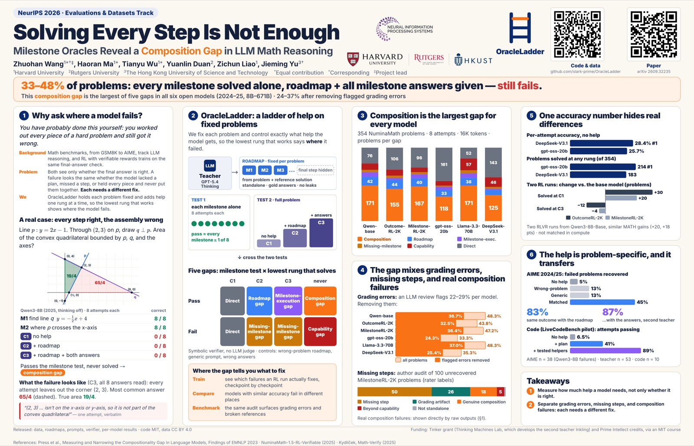

You have probably done this yourself: you work out every piece of a hard problem and still get the answer wrong, because one piece never makes it into the final step. Language models show the same pattern, and for all six models we tested it is the most common way they fail.
If you train, compare, or benchmark reasoning models, a wrong answer alone tells you very little. Did the model lack a plan, fumble a step, or hold every piece and fail to put them together? Each calls for a different fix.
OracleLadder separates these cases. It holds each problem fixed and changes only what the model is told: nothing, a roadmap of the steps, or the roadmap plus the answer to every step. When a model solves every step alone and still fails with every answer in hand, we call it the composition gap.
One problem, four levels of help
Qwen3-8B (a 2025 model, thinking off) answers each question 8 times. Pick a level of help to see every answer it gave.
Through the point (2, 3) on the line p: y = 2x − 1, a line q perpendicular to p is drawn. Find the area of the convex quadrilateral bounded by p, q, and the coordinate axes.
The last step, assembling the area, stays hidden because its answer is the solution.
“But this point isn’t on the x-axis or y-axis, so it is not part of the convex quadrilateral bounded by the four lines.”Attempt 3 with both step answers in hand, about the corner (2, 3).
How OracleLadder works
A teacher model (GPT-5.4 Thinking) reads each problem and its reference solution and writes one fixed roadmap of milestones: small standalone problems, each with a gold answer that a program can check. Automatic checks drop milestones that give the final answer away. The teacher never sees the models we test, so every model gets the same roadmap.
We then run two tests on each model. The milestone test asks whether the model solves each milestone alone. The ladder of help gives the full problem with no help (C1), with the roadmap (C2), and with the roadmap plus every milestone answer (C3). A deterministic symbolic verifier grades every answer, with no LLM judge.

Two tests, five gaps
Crossing the milestone test with the lowest rung that works sorts every failure into one of five gaps. Each gap points to a different fix. Pick a model to see its counts on 354 problems, and pick a cell to read what it means.
Composition is the largest gap for every model
Six open models from 2024 and 2025, from 8B to 671B parameters. For every one of them, the composition gap is the largest of the five gaps: 33–48% of the 354 problems.
Our verifier is strict, so some of these problems are grading errors. An LLM review flags 22–29% of each model's composition-gap problems as verifier or format errors. After removing them, the gap still covers 24–37%.
One accuracy number hides the difference
DeepSeek-V3.1 is right more often per attempt than gpt-oss-20b, 28.4% against 25.7%. Yet gpt-oss-20b solves more problems once milestone help is allowed: 214 against 183. It leaves more of its failures recoverable. In 1,000 bootstrap resamples of the problems, gpt-oss-20b solves the most problems in every one.
The help is problem-specific, and it carries over
Is the roadmap real information, or only a longer prompt? We replace it with a roadmap from another problem, with a generic "break it into steps" prompt, or keep it and pair it with wrong answers. Only the matched roadmap lifts recovery. The same contrast holds on MATH500 and AIME 2024/25, where Qwen3-8B (thinking off) is both the screen and the student.
Two RL runs with the same gain move different problems
Two RLVR runs start from Qwen3-8B-Base. They gain almost the same on MATH, +20 and +18 points. One turns 30 more problems into direct solves, the other 20. The runs differ in more than the reward, so we read them as two readouts of training and do not rank the methods.
What the composition gap contains
We report three numbers separately, because each points to a different fix.
Talk and poster
A five-minute explainer with captions. A 2-minute version is here.

Poster (PDF) and slides (PDF). Poster Session 4 in Sydney, Wed, Dec 9, 17:00–20:00 AEDT.
Data, code, and citation
- The 354-problem diagnostic set with every roadmap and gold milestone answer.
- Milestone-test and ladder results for all six models, the symbolic verifier, all prompts, and the audit labels.
- Replication data for MATH500, AIME 2024/25, and the code pilot. Any new model can be run on the released roadmaps directly.
Everything is at github.com/slark-prime/OracleLadder. Code is MIT-licensed and data is CC BY 4.0.
@inproceedings{wang2026oracleladder,
title = {Solving Every Step Is Not Enough: Milestone Oracles Reveal
a Composition Gap in {LLM} Math Reasoning},
author = {Wang, Zhuohan and Ma, Haoran and Wu, Tianyu and
Duan, Yuanlin and Liao, Zichun and Yu, Jieming},
booktitle = {Advances in Neural Information Processing Systems},
year = {2026},
eprint = {2609.32235},
archivePrefix = {arXiv}
}